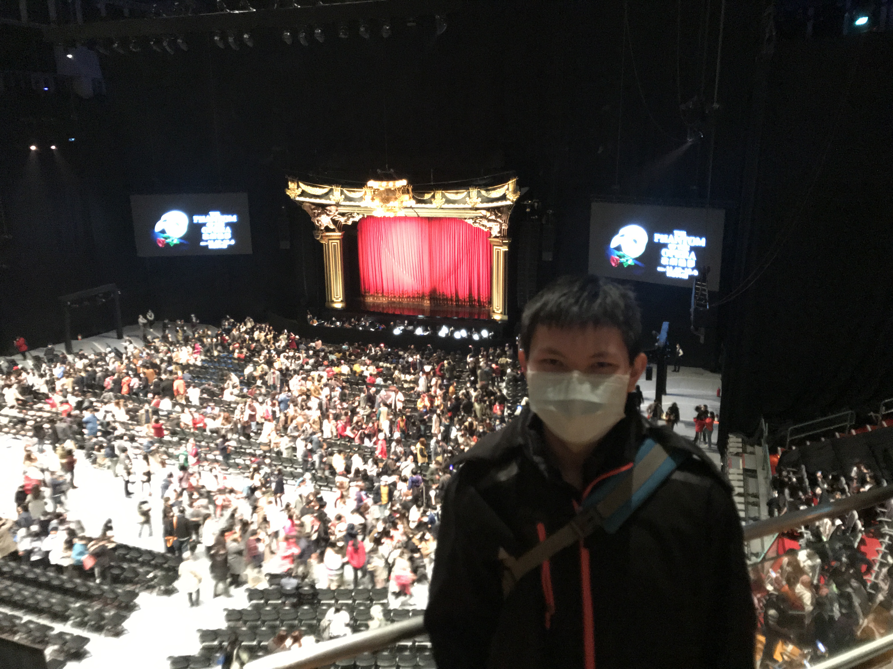
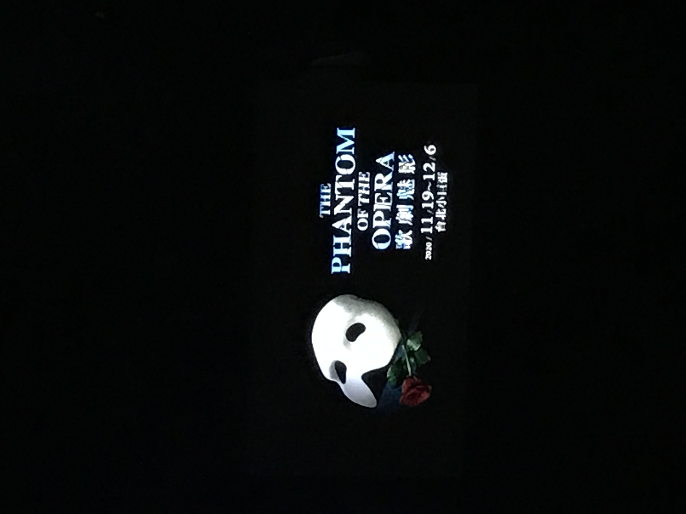
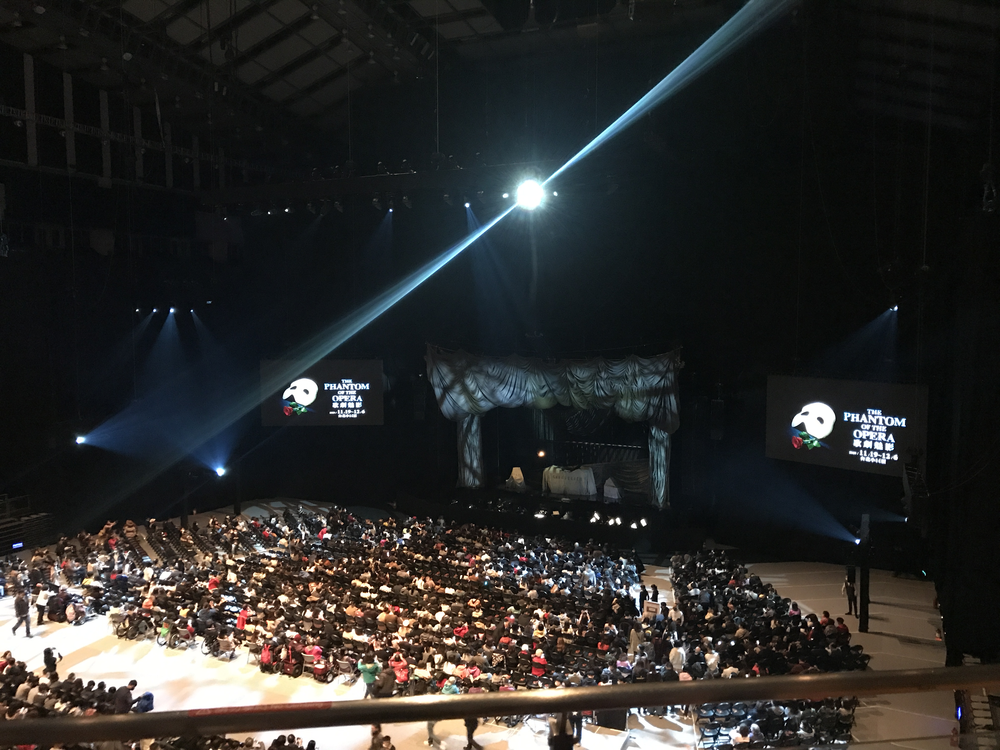
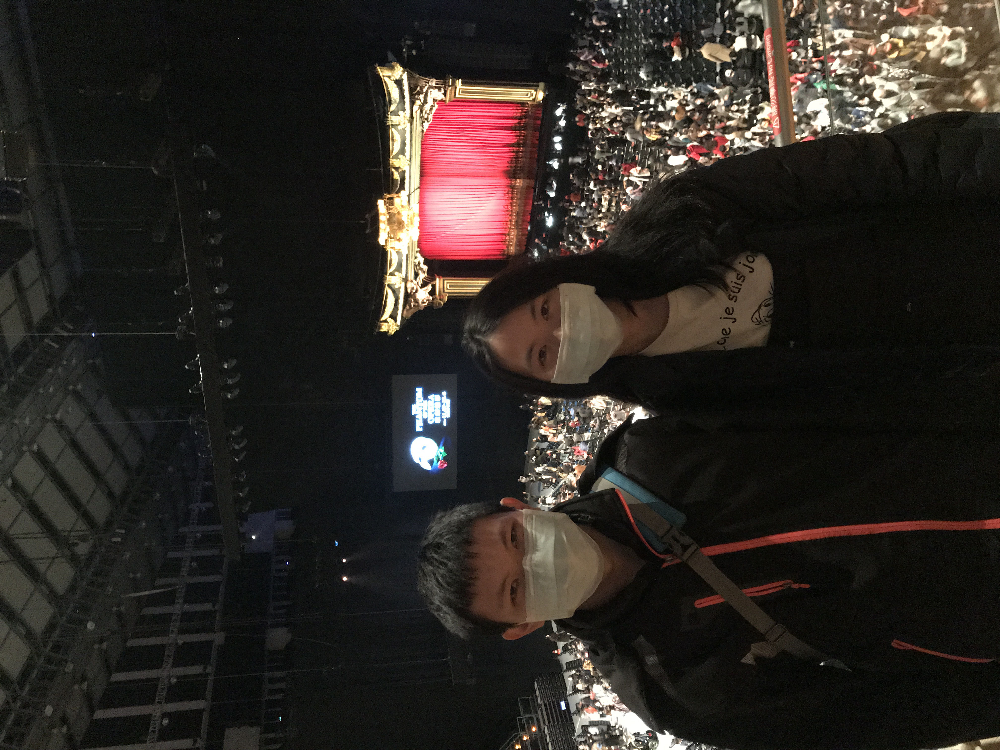
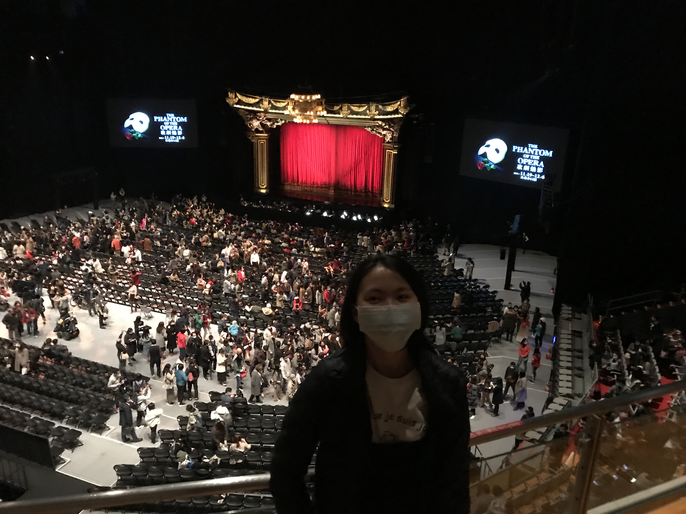

歌劇魅影觀賞
第一次去小巨蛋(2020/12/5)
我們座的是3樓的位置,雖然不算前面,但也是能夠一窺女主角的好身材的,表演中不能照相錄影,所以只有開始前拍的照片
我們看的是倒數第3場
看完之後覺得還挺有趣的,雖然以前就有聽說過,但這是我第一次完整了解到這個故事,雖然過程中有許多不合邏輯的地方,像是女主角根本在魅影和未婚夫之間飄忽不定,只希望能被給予又不付出,一下說愛這個一下又愛那個,感覺會被綁架也挺合理的,要是她能早點作下決定,也許這場悲劇也不會發生
但不是有句話說"看電影時就要全心投入電影的世界觀"嗎?那我想看歌劇也是一樣吧!
不過音樂是真的蠻好聽的